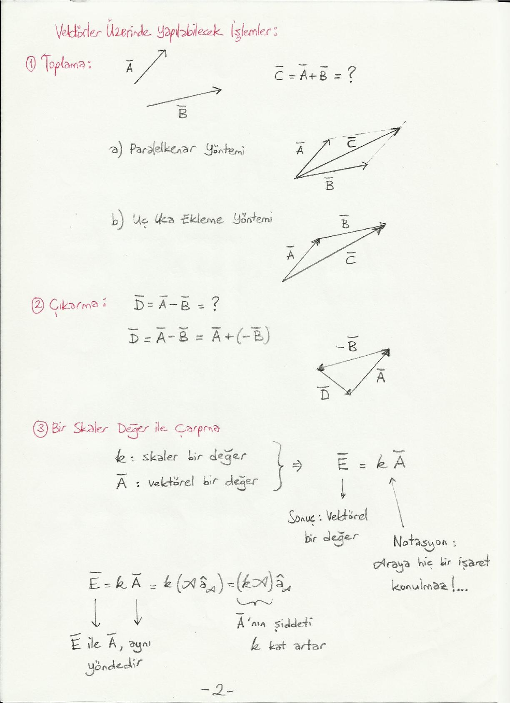
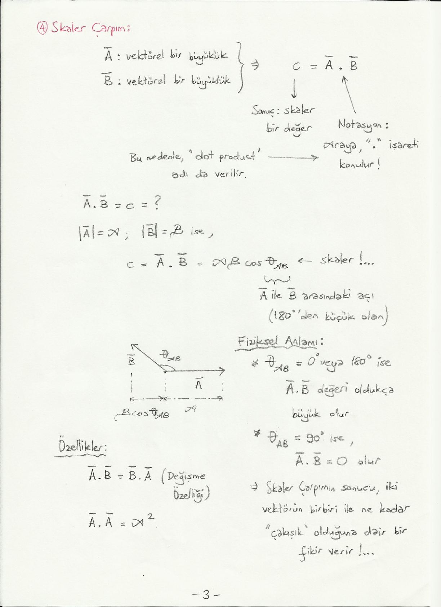
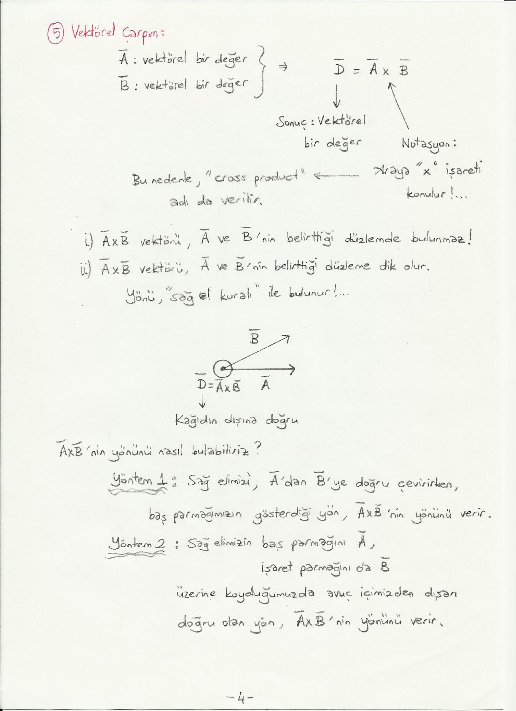
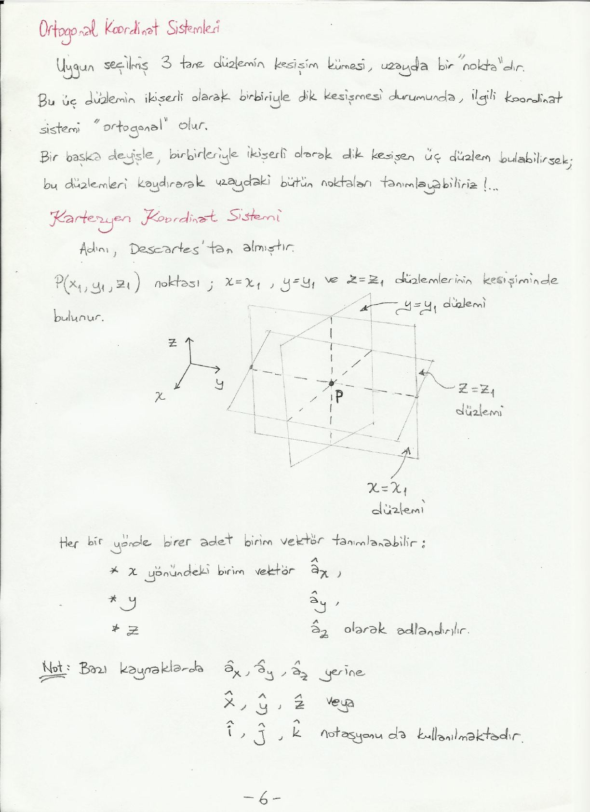
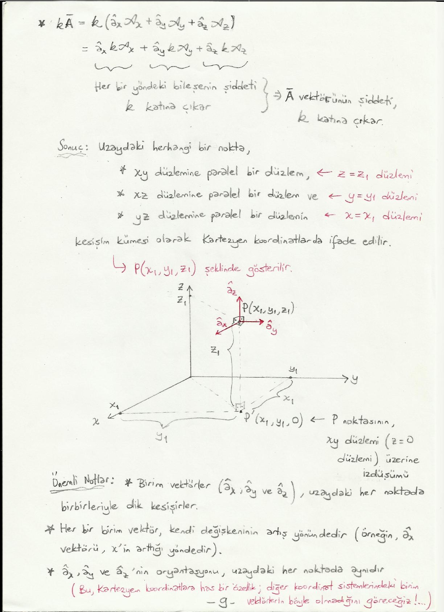

· EEM224
EEM224 Electromagnetics I: Vector Analysis – Vector Operations and Cartesian Coordinates (Handwritten Lecture Note)
EEM224 – Elektromanyetik I · 17.03.2015 · 16.10.2026
This post is the first part of the handwritten lecture notes for EEM224 Electromagnetics I at Başkent University, titled "Vector Analysis" (9 pages). The note does not state the author's name or a date; the file has been in the course folder of the Dropbox archive since 2015. Below, the headings, definitions, and formulas have been transcribed into text; images of the relevant pages are included for the drawings. The original PDF of the scanned note can be downloaded at the end of the post.
Vector and its notation
A vector is defined by its direction and its magnitude:
- Ā = â_A A
- â_A: the direction, i.e. the unit vector (a vector whose magnitude is 1)
- A: the magnitude (size, amplitude); it is a scalar quantity
From this, A = |Ā| and â_A = Ā / |Ā| = Ā / A are written.
General notation:
| Handwritten | In textbooks | |
|---|---|---|
| Vector quantities | Ā or A⃗ (with a "bar" or an "arrow" on top) | A (boldface), Ā, A⃗ or A with a wavy underline (especially in mathematics books) |
| Unit vector | â_A (with a "hat" on top) | boldface a_A or â_A |
| Scalar quantities | A (plain) | A (italic, slanted typeface) |
In a graph, a vector is shown by an arrow: the length of the arrow is |Ā| = A, and the short arrow in the same direction is the unit vector with |â_A| = 1.
Operations that can be performed on vectors
1. Addition
C̄ = Ā + B̄ is found by two methods:
- a) Parallelogram method: Ā and B̄ are drawn starting from the same point; the diagonal of the resulting parallelogram is C̄.
- b) Head-to-tail method: B̄ is attached to the tip of Ā; the vector from the start of Ā to the tip of B̄ is C̄.
2. Subtraction
D̄ = Ā − B̄ = Ā + (−B̄)
3. Multiplication by a scalar
If k is a scalar and Ā is a vector quantity, the result Ē = kĀ is a vector. Notation: no symbol is placed between them.
Ē = kĀ = k(A â_A) = (kA) â_A
Ē and Ā point in the same direction; the magnitude of Ā is increased by a factor of k.

4. Scalar product
If Ā and B̄ are vector quantities, the result c = Ā · B̄ is a scalar. Notation: a "·" symbol is placed between them; hence it is also called the dot product.
If |Ā| = A and |B̄| = B, then
c = Ā · B̄ = A B cos θ_AB
Here θ_AB is the angle between Ā and B̄ (the one smaller than 180°). B cos θ_AB is the projection of B̄ onto Ā.
Physical meaning:
- If θ_AB = 0° or 180°, the value of Ā · B̄ is quite large.
- If θ_AB = 90°, Ā · B̄ = 0.
- The result of the scalar product gives an idea of how much the two vectors "coincide" with, i.e. align with, each other.
Properties:
- Ā · B̄ = B̄ · Ā (commutative property)
- Ā · Ā = A²

5. Vector product
If Ā and B̄ are vector quantities, the result D̄ = Ā × B̄ is a vector. Notation: a "×" symbol is placed between them; hence it is also called the cross product.
- The vector Ā × B̄ does not lie in the plane defined by Ā and B̄.
- The vector Ā × B̄ is perpendicular to the plane defined by Ā and B̄. Its direction is found by the right-hand rule.
In the example, Ā is drawn pointing to the right and B̄ pointing up and to the right; D̄ = Ā × B̄ points out of the page.
How can we find the direction of Ā × B̄?
- Method 1: As we rotate our right hand from Ā toward B̄, the direction our thumb points gives the direction of Ā × B̄.
- Method 2: When we place the thumb of our right hand along Ā and the index finger along B̄, the direction pointing outward from the palm gives the direction of Ā × B̄.

Magnitude and direction together:
D̄ = Ā × B̄ = â_n A B sin θ_AB
Here â_n is the unit vector in the direction perpendicular to the plane containing the vectors Ā and B̄ (the direction found by the right-hand rule).
Physical meaning: If θ_AB = 0° or 180°, Ā × B̄ = 0; if θ_AB = 90°, the magnitude of Ā × B̄ is at its maximum. The result of the vector product gives an idea of how "perpendicular" the two vectors are to each other.
Properties:
- B̄ × Ā ≠ Ā × B̄: it is not commutative!
- B̄ × Ā = −Ā × B̄ (easily seen with the right-hand rule)
- Ā × Ā = 0
Examples of products of three or more vectors
| Expression | Result |
|---|---|
| Ā · (B̄ × C̄) | scalar (vector · vector) |
| Ā × (B̄ × C̄) | vector (vector × vector) |
| (Ā × B̄) × (C̄ × D̄) | vector |
| (Ā · B̄) C̄ | vector (scalar × vector) |
One must pay close attention to parentheses and notation!
Orthogonal coordinate systems
The intersection set of 3 suitably chosen planes is a "point" in space. If these three planes intersect one another pairwise at right angles, the corresponding coordinate system is orthogonal. In other words, if we can find three planes that intersect each other pairwise at right angles, then by sliding these planes we can define all the points in space.
Cartesian coordinate system
It takes its name from Descartes. The point P(x₁, y₁, z₁) lies at the intersection of the planes x = x₁, y = y₁, and z = z₁.
One unit vector can be defined in each direction: the unit vector in the x direction is called â_x, in the y direction â_y, and in the z direction â_z. In some sources, the notation x̂, ŷ, ẑ or î, ĵ, k̂ is also used instead of â_x, â_y, â_z.

Therefore any vector in space can be expressed in terms of â_x, â_y, and â_z:
Ā = â_x A_x + â_y A_y + â_z A_z
This is the sum of three vectors: â_x A_x is the component of Ā in the x direction (a vector), and the others are the components in the y and z directions. Since each term is the product of a vector (â_z) and a scalar (A_z), there is no symbol between them.
Representation of vector operations in Cartesian coordinates
If Ā = â_x A_x + â_y A_y + â_z A_z and B̄ = â_x B_x + â_y B_y + â_z B_z, then:
Addition:
Ā + B̄ = â_x (A_x + B_x) + â_y (A_y + B_y) + â_z (A_z + B_z)
Scalar product:
Ā · B̄ = A_x B_x + A_y B_y + A_z B_z
The reason is the relationship among â_x, â_y, and â_z:
- Since they are perpendicular to one another, â_x · â_y = 0, â_x · â_z = 0, â_y · â_z = 0
- Since they are unit vectors, â_x · â_x = |â_x|² = 1, â_y · â_y = 1, â_z · â_z = 1
When the product is expanded, the term (â_x · â_x) A_x B_x remains, while mixed terms such as (â_x · â_y) A_x B_y vanish.
Vector product: First, the relationships among the unit vectors:
- â_x × â_y = â_z; â_y × â_z = â_x; â_z × â_x = â_y
- â_y × â_x = −â_z; â_z × â_y = −â_x; â_x × â_z = −â_y
- â_x × â_x = 0; â_y × â_y = 0; â_z × â_z = 0
Tip: to remember easily, use the cycle x → y → z → x; going clockwise is +, the reverse is −.
After expanding the nine terms and dropping the zero ones:
Ā × B̄ = (A_y B_z − A_z B_y) â_x + (A_z B_x − A_x B_z) â_y + (A_x B_y − A_y B_x) â_z
The result obtained is seen to be equal to the determinant of the following matrix:
| â_x â_y â_z |
Ā × B̄ = | A_x A_y A_z |
| B_x B_y B_z |In the note, the determinant is expanded using the cross-multiplication (Sarrus) rule by rewriting the first two rows below: A_y B_z â_x + A_x B_y â_z + A_z B_x â_y − A_y B_x â_z − A_z B_y â_x − A_x B_z â_y.
Multiplication by a scalar:
kĀ = k(â_x A_x + â_y A_y + â_z A_z) = â_x kA_x + â_y kA_y + â_z kA_z
The magnitude of the component in each direction is multiplied by k, so the magnitude of the vector Ā is multiplied by k.
Conclusion: A point in Cartesian coordinates
Any point in space is expressed in Cartesian coordinates as the intersection set of
- a plane parallel to the xy plane (the z = z₁ plane),
- a plane parallel to the xz plane (the y = y₁ plane), and
- a plane parallel to the yz plane (the x = x₁ plane),
and is denoted P(x₁, y₁, z₁). P'(x₁, y₁, 0) is the projection of P onto the xy plane (the z = 0 plane).

Important notes:
- The unit vectors (â_x, â_y, and â_z) intersect one another at right angles at every point in space.
- Each unit vector points in the direction of increase of its own variable (for example, the vector â_x points in the direction in which x increases).
- The orientation of â_x, â_y, and â_z is the same at every point in space. This is a property specific to Cartesian coordinates; we will see that the unit vectors in other coordinate systems are not like this!